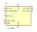
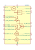
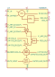
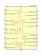
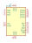
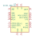
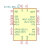

| Symbol |
Description |

LA1185 | Description: FM receiver front-end IC for radio-cassette recorder, music center applications, SIP-9
Keys: FM mixer receiver amplifier
Datasheet: https://www.alldatasheet.com/datasheet-pdf/pdf/39974/SANYO/LA1185.html |
MCS3142 | Description: Microchip KEELOQ classic / ultimate encoder - keyfob IC sending button state, serial and authentiation as PWM/manchester encoded AM/FM signal in ISM bands
Keys: KEELOQ classic ultimate keyless entry keyfob ISM
Datasheet: http://ww1.microchip.com/downloads/en/DeviceDoc/40001747A.pdf |

SA605D | Description: High performance monolithic low-power FM IF system, SO-20
Keys: High performance monolithic low-power FM IF system
Datasheet: https://www.nxp.com/docs/en/data-sheet/SA605.pdf |

SA605DK | Description: High performance monolithic low-power FM IF system, SSOP-20
Keys: High performance monolithic low-power FM IF system
Datasheet: https://www.nxp.com/docs/en/data-sheet/SA605.pdf |

SA636DK | Description: Low-voltage, high performance, monolithic FM IF system with high-speed RSSI, SSOP-20
Keys: Low-voltage, monolithic, FM, IF, RSSI
Datasheet: https://www.nxp.com/docs/en/data-sheet/SA636.pdf |

Si4362 | Description: EZRadioPRO Low Current Receiver
Keys: radio receiver
Datasheet: http://www.silabs.com/Support%20Documents/TechnicalDocs/Si4362.pdf |
Si4730-D60-GU | Description: AM/FM Broadcast Radio Receiver
Keys: Broadcast AM FM Radio Receiver
Datasheet: http://www.silabs.com/Support%20Documents/TechnicalDocs/Si4730-31-34-35-D60.pdf |

Si4731-D60-GU | Description: AM/FM Broadcast Radio Receiver with RDS/RBDS
Keys: Broadcast AM FM Radio Receiver RDS RBDS
Datasheet: http://www.silabs.com/Support%20Documents/TechnicalDocs/Si4730-31-34-35-D60.pdf |
Si4734-D60-GU | Description: AM/FM/SW/LW Broadcast Radio Receiver
Keys: Broadcast AM FM SW LW Radio Receiver
Datasheet: http://www.silabs.com/Support%20Documents/TechnicalDocs/Si4730-31-34-35-D60.pdf |

Si4735-D60-GU | Description: AM/FM/SW/LW Broadcast Radio Receiver with RDS/RBDS
Keys: Broadcast AM FM SW LW Radio Receiver RDS RBDS
Datasheet: http://www.silabs.com/Support%20Documents/TechnicalDocs/Si4730-31-34-35-D60.pdf |
ZETA-433-SO | Description: FM ZETA TRANSCEIVER MODULE, OPTIMISED FOR 433MHZ
Keys: RF TRANSCEIVER MODULE
Datasheet: https://www.rfsolutions.co.uk/downloads/1456219226DS-ZETA.pdf |
ZETA-868-SO | Description: FM ZETA TRANSCEIVER MODULE, OPTIMISED FOR 868MHZ
Keys: RF TRANSCEIVER MODULE
Datasheet: https://www.rfsolutions.co.uk/downloads/1456219226DS-ZETA.pdf |
ZETA-915-SO | Description: FM ZETA TRANSCEIVER MODULE, OPTIMISED FOR 915MHZ
Keys: RF TRANSCEIVER MODULE
Datasheet: https://www.rfsolutions.co.uk/downloads/1456219226DS-ZETA.pdf |